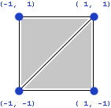
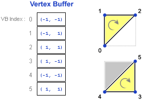
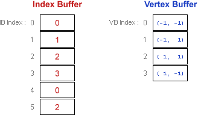
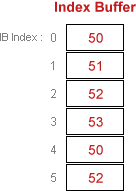
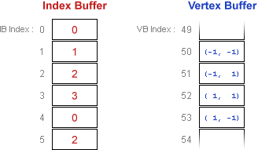

Both indexed and nonindexed drawing methods are supported by Direct3D. The indexed methods use a single set of indices for all vertex components. Vertex data is stored in vertex buffers, and index data is stored in index buffers. Listed below are a few common scenarios for drawing primitives using vertex and index buffers.
These examples compare the use of IDirect3DDevice9::DrawPrimitive and IDirect3DDevice9::DrawIndexedPrimitive
Let's say you want to draw the quad that is shown in the following illustration.

If you use the Triangle List primitive type to render the two triangles, each triangle will be stored as 3 individual vertices, resulting in a similar vertex buffer to the following illustration.

The drawing call is very straightforward; starting at location 0 within the vertex buffer, draw two triangles. If culling is enabled, the order of the vertices will be important. This example assumes the default counter-clockwise culling state, so visible triangles must be drawn in clockwise order. The Triangle List primitive type simply reads three vertices in linear order from the buffer for each triangle, so this call will draw triangles (0, 1, 2) and (3, 4, 5):
DrawPrimitive( D3DPT_TRIANGLELIST, // PrimitiveType
0, // StartVertex
2 ); // PrimitiveCount
As you'll notice, the vertex buffer contains duplicate data in locations 0 and 4, 2 and 5. That makes sense because the two triangles share two common vertices. This duplicate data is wasteful, and the vertex buffer can be compressed by using an index buffer. A smaller vertex buffer reduces the amount of vertex data that has to be sent to the graphics adapter. Even more importantly, using an index buffer allows the adapter to store vertices in a vertex cache; if the primitive being drawn contains a recently-used vertex, that vertex can be fetched from the cache instead of reading it from the vertex buffer, which results in a big performance increase.
An index buffer 'indexes' into the vertex buffer so each unique vertex needs to be stored only once in the vertex buffer. The following diagram shows an indexed approach to the earlier drawing scenario.

The index buffer stores VB Index values, which reference a particular vertex within the vertex buffer. A vertex buffer can be thought of as an array of vertices, so the VB Index is simply the index into the vertex buffer for the target vertex. Similarly, an IB Index is an index into the index buffer. This can get very confusing very quickly if you're not careful, so make sure you're clear on the vocabulary being used: VB Index values index into the vertex buffer, IB Index values index into the index buffer, and the index buffer itself stores VB Index values.
The drawing call is shown below. The meanings of all the arguments are discussed at length for the next drawing scenario; for now, just note that this call is again instructing Direct3D to render a triangle list containing two triangles, starting at location 0 within the index buffer. This call will draw the same two triangles in the exact same order as before, ensuring a proper clockwise orientation:
DrawIndexedPrimitive( D3DPT_TRIANGLELIST, // PrimitiveType
0, // BaseVertexIndex
0, // MinIndex
4, // NumVertices
0, // StartIndex
2 ); // PrimitiveCount
Pretend now that you want to draw only the second triangle, but you want to use the same vertex buffer and index buffer that are used when drawing the entire quad, as shown in the following diagram.
For this drawing call, the first IB Index used is 3; this value is called the StartIndex. The lowest VB Index used is 0; this value is called the MinIndex. Even though only three vertices are required to draw the triangle, those three vertices are spread across four adjacent locations in the vertex buffer; the number of locations within the contiguous block of vertex buffer memory required for the drawing call is called NumVertices, and will be set to 4 in this call. The MinIndex and NumVertices values are really just hints to help Direct3D optimize memory access during software vertex processing, and could simply be set to include the entire vertex buffer at the price of performance.
Here is the drawing call for the single triangle case; the meaning of the BaseVertexIndex argument will be explained next:
DrawIndexedPrimitive( D3DPT_TRIANGLELIST, // PrimitiveType
0, // BaseVertexIndex
0, // MinIndex
4, // NumVertices
3, // StartIndex
1 ); // PrimitiveCount
BaseVertexIndex is a value that's effectively added to every VB Index stored in the index buffer. For example, if we had passed in a value of 50 for BaseVertexIndex during the previous call, that would functionally be the same as using the index buffer in the following diagram for the duration of the DrawIndexedPrimitive call:

This value is rarely set to anything other than 0, but can be useful if you want to decouple the index buffer from the vertex buffer: If when filling in the index buffer for a particular mesh the location of the mesh within the vertex buffer isn't yet known, you can simply pretend the mesh vertices will be located at the start of the vertex buffer; when it comes time to make the draw call, simply pass the actual starting location as the BaseVertexIndex.
This technique can also be used when drawing multiple instances of a mesh using a single index buffer; for example, if the vertex buffer contained two meshes with identical draw order but slightly different vertices (perhaps different diffuse colors or texture coordinates), both meshes could be drawn by using different values for BaseVertexIndex. Taking this concept one step further, you could use one index buffer to draw multiple instances of a mesh, each contained in a different vertex buffer, simply by cycling which vertex buffer is active and adjusting the BaseVertexIndex as needed. Note that the BaseVertexIndex value is also automatically added to the MinIndex argument, which makes sense when you see how it's used:
Pretend now that we again want to draw only the second triangle of the quad using the same index buffer as before; however, a different vertex buffer is being used in which the quad is located at VB Index 50. The relative order of the quad vertices remains unchanged, only the starting location within the vertex buffer is different. The index buffer and vertex buffer would look like the following diagram.

Here is the appropriate draw call; note that BaseVertexIndex is the only value which has changed from the previous scenario:
DrawIndexedPrimitive( D3DPT_TRIANGLELIST, // PrimitiveType
50, // BaseVertexIndex
0, // MinIndex
4, // NumVertices
3, // StartIndex
1 ); // PrimitiveCount
Â
Â